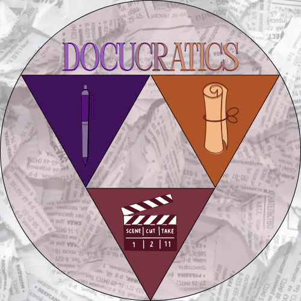

Quarter 2 Videos


As DocuCratics
The Name
We planned for our brand name by taking our two main topics and themes for our channel and combining them or their synonyms and closely related phrases together, in one word. DocuCratics is a portmanteau of "Documentary" and "Democratic." We wanted a name that sounded professional yet approachable.
The Tagline
"Where truth shapes policy, with voices of democracy." We planned for our tagline by determining our channel’s content, purpose, aim and how we planned to incorporate the entertainment aspect of things into our channel. It reflects our mission to show that informed citizens are the backbone of any functioning political system.
Analysis of the Logo

Design
We planned for our logo by first determining our channel’s content, purpose, and aim. After doing so, we took all the things closely related to the three we got and we thought of what things would—when presented in one visual—could make our logo look harmonious and loyal to our theme.
Mathematical Properties
Our logo uses four congruent triangles. They’re all placed near one another around the center of our logo with each side length being equal to the adjacent and opposite side lengths—making them equilateral triangles. Since all three sides of each triangle are equal, all interior angles of the triangle also measure exactly 60°.
We integrated the triangles into our logo in a way that would illustrate and show the three major elements of our YouTube channel’s brand—writing, documentation, and filmmaking—and how they all come together to form DocuCratics.
Properties of equilateral triangle:
All sides of equilateral triangles are equal (e.g. a triangle that has 10 cm as the length for each of its sides.)
If a triangle is equilateral, its angles are automatically all equal to each other, with each being 60°.
All equilateral triangles are automatically similar triangles with other equilateral triangles.
The image may not be fully viewable for all devices.